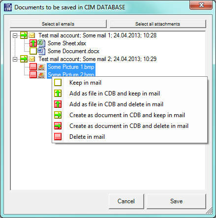

Create messages in the system¶
In general, a message from Outlook can be created in the system with the following steps:
Select the messages to be archived by marking them.
Note
The [ Create e-mail/attachment ] button is enabled if at least one message is marked. Thus it is also possible for multiple elements to be marked and created simultaneously.
Click the enabled [ Create e-mail/attachment ] button.
A search is carried out to see if an CIM Database/WIN instance is already running. If no CIM Database/WIN has been started, there is an automatic attempt to open a new program instance.
Note
It is generally recommended that an instance of CIM Database/WIN be started before beginning the archiving procedures.
Pressing the [ Create e-mail/attachment ] button causes a Selection dialog to appear. This dialog provides options that can be used to archive the selected messages. Sender, Subject, Date and Time are specified again in the e-mail node. If the message to be archived contains attachments, then these are listed subordinately in the table of the dialog.
Important
Messages that contain no attachments are not listed in the selection dialog. They are handled in accordance with the Default action for e-mails from the system integration (see settings dialog). If none of the selected messages contains attachments, then the selection dialog is skipped.
Outlook: Messages with attachments in the archiving selection dialog
This dialog provides the option of deciding whether the attachments to a message are to be extracted from the message, that is, created separately in the system.
The user has the option of selecting the elements in the dialog table. It is possible to select one or more elements. Likewise, the [ Select all e-mails ] and [ Select all attachments ] control elements at the upper edge of the dialog can also be used if the user would like to select/change an action for all e-mails or attachments. The actions are changed either by simply clicking the action symbol, or by using the pop-up menu, which appears as soon as you right-click a selection marker.
Note
The extracting/deleting of attachments has an effect only on the message copy to be archived in the system. The original message in Outlook remains unchanged, unless the user selects the option for the respective message to have it automatically deleted in Outlook after the archiving procedure.
Note
If the same action is always executed for e-mails or attachments, this can be preconfigured for faster work in the settings dialog. There, the selection dialog can also be entirely deactivated (see OfficeLink administration manual). Default action for pictures in HTML-Emails is always “Keep in mail”.
Note
A grayed out element represents an embedded object within an e-mail. The only valid action for this objects is “Keep in mail”. The action cannot be changed. Example: pictures embedded in e-mails in Rich Text Format (RTF).
After making the selection, confirm the dialog using the [ Save ] button. Then the mask for creating documents appears in the system for every file (message/attachment) to be archived. The individual fields of the create mask are prepopulated corresponding to the configuration. The original default mask settings are overwritten with the configured values in the process. Then the user has to assign attributes and confirm each mask with the respective necessary parameters added. If attachments are not created as documents, but appended to the e-mail documents as files in CIM Database/WIN, the create mask for these files is automatically filled-in and skipped.
Note
If necessary, depending on the settings configured, the attachments are extracted from the message to be archived and/or the original message in Outlook is automatically deleted in the end.